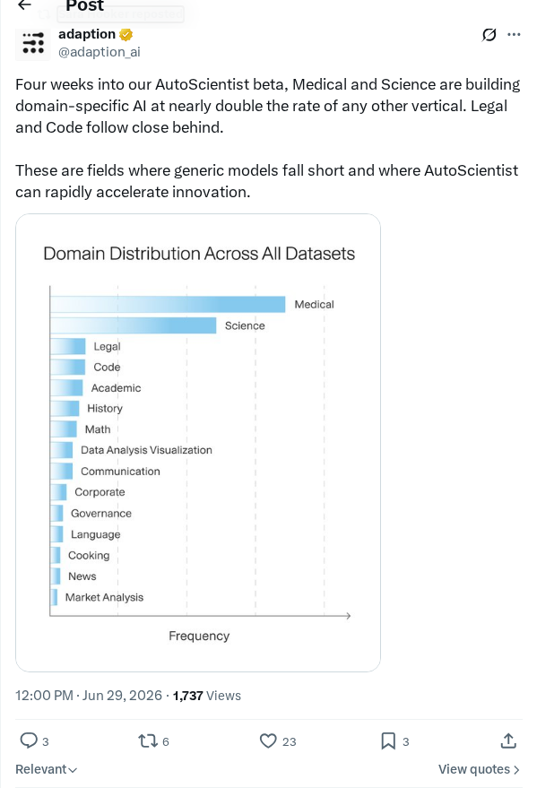
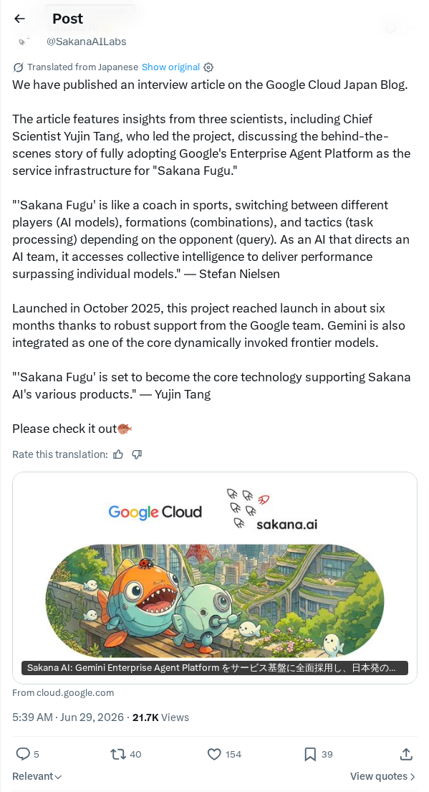
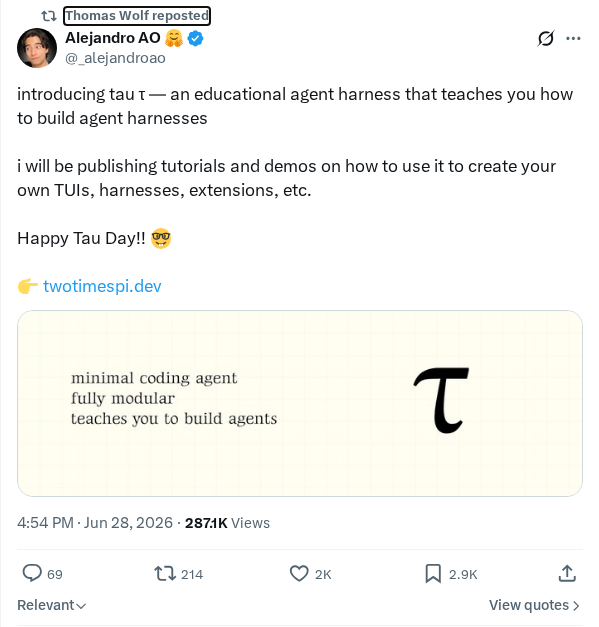
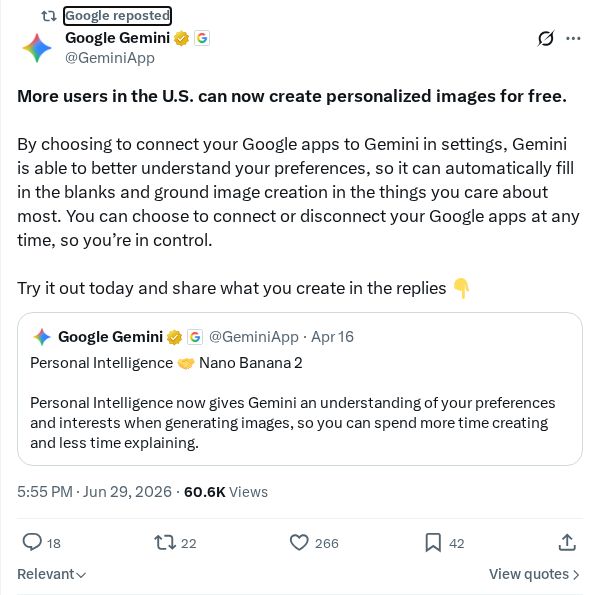
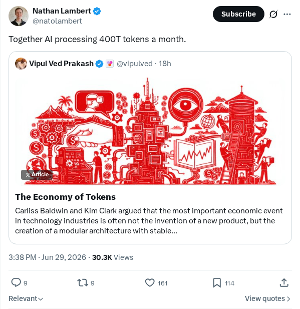
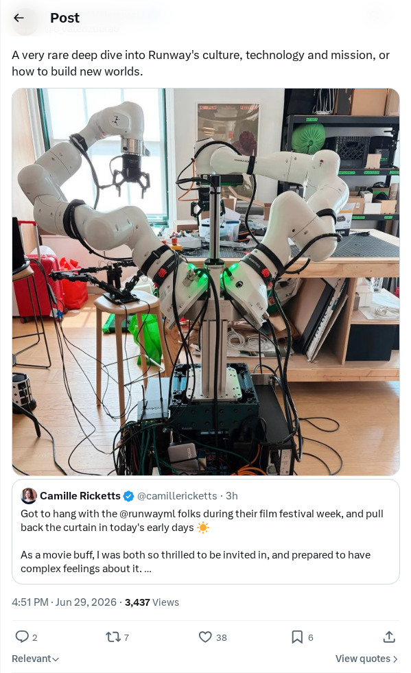

HP Inc. 与 OpenAI 达成前沿战略合作伙伴关系
HP Inc. 已与 OpenAI 建立前沿战略合作伙伴关系，旨在在其业务中部署先进的人工智能解决方案。此次合作将把 OpenAI 的生成式模型直接集成到 HP 的软件开发工作流、内部企业系统和客户体验平台中。通过利用这些生成式 AI 能力，HP 旨在加速数字化转型、提高软件工程效率，并为其全球客户群提供更个性化的互动体验。
AI 前沿资讯、研究与趋势精选
HP Inc. 已与 OpenAI 建立前沿战略合作伙伴关系，旨在在其业务中部署先进的人工智能解决方案。此次合作将把 OpenAI 的生成式模型直接集成到 HP 的软件开发工作流、内部企业系统和客户体验平台中。通过利用这些生成式 AI 能力，HP 旨在加速数字化转型、提高软件工程效率，并为其全球客户群提供更个性化的互动体验。
本分析指出 Qwen 3.6 27B 大型语言模型是本地开发工作流的最佳参数配置。它在计算效率、模型大小以及软件工程、自然语言处理和通用推理任务的高质量表现之间实现了平衡。27B 模型可在消费级硬件上高效运行，通过提供零持续使用成本、低延迟以及为自托管人工智能应用增强数据隐私保护，成为私有 API 的有力替代方案。
Deepreinforce-ai 发布了 Ornith-1.0，这是一个专为自进化、智能体编程设计的开源框架。Ornith-1.0 解决了静态代码生成模型的局限性，集成了迭代自进化和深度强化学习。这种设计使模型能够通过闭环反馈自主调试输出、优化编码能力并适应复杂的编程环境，旨在让开发者工作流中能够更普及地使用先进的自主编程智能体。
Micro-Agent 框架被引入，旨在通过在模型 API 内部执行协作式多智能体工作流，超越海量前沿模型的性能。该系统通过编排专业的小型模型来优化执行路径并实现实时协作，与单体大型语言模型相比，实现了更高的准确性和更复杂的解决问题能力。该框架降低了总体延迟和运营成本，代表了架构向协作智能和精细化智能体设计方向的转变。
DeepSeek 宣布将于 7 月中旬发布 DeepSeek V4 模型，并引入峰谷动态定价结构，以优化计算资源并平衡服务器负载。通过在非高峰时段提供折扣费率并在高峰时段采用标准定价，DeepSeek 旨在激励开发者和企业更均匀地分配 API 请求。此举符合业界对于可持续计算资源管理和高性价比大型语言模型推理的努力方向。
开源命令行工具 Herdr 已发布，可作为直接运行在终端内的智能体多路复用器。Herdr 允许软件开发者、系统管理员和 AI 研究人员从单一命令行界面同时编排、提示和监控多个自主 AI 智能体。该工具无需图形界面即可简化多智能体协调，从而精简开发工作流并在基于终端的环境中保持较低的系统开销。
一份调查报告揭露了亚马逊上 AI 生成的游戏攻略书激增，这些书是为尚未发布的备受期待的游戏编写的。自助出版者正利用生成式 AI 工具快速制作并上架这些低质量的自动化攻略。这种被称为“guideslop”的做法利用了零售搜索算法。通过在商店中充斥幻觉、未经验证和爬取的内容，这些发布者降低了市场的可靠性，凸显了电子商务平台在治理方面的挑战。
Luma Labs 在其 AI 智能体平台内引入了一项专为自动化时尚电子商务工作流设计的任务特定能力。这种被称为“技能”的视觉和操作工具，允许数字代理机构和创作者部署专门的智能体模型来处理复杂的产品流水线任务，而无需依赖通用模型。该功能扩展了该平台对面向商业运营的专门化、基于技能的任务执行的关注。
Greg Brockman 推出了 Sol 和 Daybreak，这两个新平台旨在将生成式 AI 直接纳入创意流水线。这些工具旨在通过连接人类意图与机器生成的输出来简化数字工作流，目标应用涵盖数字媒体、软件设计和艺术创作。有关底层模型、确切接口规范和公共可用性的详细信息将在开发过程中发布。

Adaption AI 宣布其 AutoScientist 平台在 Beta 测试四周内取得重大进展，该平台实现了科学发现和定制模型构建的自动化。据该公司称，医疗和科学组织正在利用该智能体 AI 平台构建领域特定的人工智能模型，其速度几乎是传统开发周期的两倍，显著加速了专业机器学习的研究。

Sakana AI 已采用谷歌云的企业智能体平台作为其“Sakana Fugu”项目的核心服务基础设施。在一份谷歌云日本的出版物中详细说明，此次合作侧重于利用谷歌的企业智能体能力来扩展、保护并加速 Sakana 专业 AI 服务的部署，优化复杂的企业工作流集成。

开发者引入了 Tau，这是一个教育型智能体工具，旨在指导工程师掌握构建定制智能体系统的架构基础。该模块化项目目前处于早期阶段，计划提供指导性教程和文档，以揭开复杂智能体工作流的神秘面纱，并帮助开发者实现和编排功能性、自主性的系统。

谷歌扩展了其 Gemini 个性化图像生成功能，使美国用户可以免费使用。此次更新允许用户将其外部谷歌应用直接连接到 Gemini 平台，从而精简生成式 AI 的创意工作流，并简化谷歌互联软件生态系统内的消费者视觉资产生成。

Together AI 已将其运营基础设施扩展至每月处理 400 万亿 Token。此次扩展针对的是大型语言模型推理和训练工作流不断增长的计算需求，巩固了该公司作为为部署大规模模型的开发者和企业客户提供可扩展计算资源提供商的地位。

Runway 首席执行官 Cristobal Valenzuela 分享了推动该公司视频生成技术的组织文化和技术路线图的细节。该更新详细说明了实验室如何将机器学习研究与创意需求相结合，从而为数字内容创作者和专业制作工作室量身定制合成媒体和视频合成工具。
阿里巴巴研究人员发布了 Qwen-Image-2.0-RL，这是一种训练后流水线，将人类反馈强化学习 (RLHF) 和策略内蒸馏 (OPD) 应用于 Qwen-Image-2.0 扩散模型。为提高视觉对齐和指令遵循能力，作者构建了任务特定的组合奖励模型。利用基于 GRPO 的可扩展训练框架和混合无分类器引导策略，该系统整合了专门的文生图和编辑模型。评估显示，Qwen-Image-2.0-RL 在 Qwen-Image-Bench 上取得了 57.84 的总分（比基础模型高 2.61），并在文生图竞技场和图像编辑竞技场中分别将 Elo 评分提高了 78 分和 93 分。
谷歌研究人员推出了 Paper Assistant 工具 (PAT)，这是一个专为自动化深度科学评审和验证而构建的智能体 AI 框架。PAT 旨在核查理论结果、验证实验并寻找缺陷，利用推理扩展技术来识别错误。该系统在 SPOT 基准测试中的数学错误识别方面比零样本召回率提高了 34%。在 STOC 和 ICML 计算机科学会议上的试点部署证明了 PAT 能够定位关键错误并建议实质性的论文改进，为减轻人类同行评审员的负担提供了一种可扩展的方法。
阿里巴巴研究人员开发了 Qwen-RobotManip，这是一种基于 Qwen-VL 的通用视觉-语言-动作基础模型。为解决机器人操作中的数据异构性问题，Qwen-RobotManip 引入了一个涵盖表示、运动和行为维度的统一对齐框架。这使得模型能够利用由开源数据集和人类视频构建的 38,100 小时预训练语料库。Qwen-RobotManip 在 RoboCasa365 和 LIBERO-Plus 等分布外设置中表现优于 pi-0.5 等现有最先进模型，并在 RoboChallenge 基准测试中排名第一，相对提升了 20%。该模型已在 ALOHA、Franka、UR 和 ARX 机器人平台上得到验证。
研究人员推出了 ConvFill，这是一种语音智能体系统，利用“对话填充”技术来解决延迟与能力之间的权衡问题。该系统部署了一个小型说话者模型（135M 到 1.7B 参数）来生成即时的上下文关联响应，以掩盖更大的外部推理模型的延迟，并随后在推理过程中合并流式知识。通过在 290,571 个示例的合成数据集上训练，ConvFill 在维持毫秒级响应时间的同时，准确率与前沿推理模型相比在 6.3% 以内。在用户测试中，参与者对该系统的评价与前沿模型相当，并更青睐其响应速度。
研究人员引入了 NormGuard，这是一种训练时铰链惩罚，旨在解决流匹配强化学习 (RL) 中的速度范数膨胀问题。在对基于流的生成器进行 RL 微调期间，每步速度范数会膨胀 5% 到 15%，从而降低感官和法医图像质量。与无法恢复质量的推理时重缩放不同，NormGuard 仅在速度范数超过参考阈值时激活。在两个基础模型、三种训练后方法和两个奖励代理上进行的测试表明，NormGuard 在保留奖励的同时，持续提高了 MLLM 评判的图像质量和法医真实感，尤其是在少步推理的情况下。
研究人员对基于 LLM 的程序修复智能体中代码执行的成本效益进行了实证研究。通过分析来自 SWE-bench 的 7,745 条智能体踪迹，并利用 Claude Code 和 Codex 等模型执行 3,000 次端到端修复尝试，研究调查了智能体如何利用测试运行。分析显示，智能体平均每个任务运行 8.8 次测试。令人惊讶的是，在过程中限制或禁止执行，在商业智能体上的解决率仅降低了 1.25 个百分点，同时却在 Token 使用量和挂钟时间上实现了巨大的节省。
研究人员推出了 SingGuard，这是一个用于视觉-语言应用中安全审核的策略自适应多模态防护栏模型系列。SingGuard 在运行时动态处理自然语言安全策略，逐条检查内容规则，并支持通过解耦强化学习优化的从直接到审慎的快-慢推理。作者还推出了 SingGuard-Bench，这是一个包含 80 多种细粒度风险类型（包括跨模态联合风险案例）的 56,340 个示例的数据集。在 35 个数据集上，SingGuard 实现了最先进的 F1 分数，并将动态规则变更下的策略遵循准确率从 0.6465 提高到了 0.7415。
研究人员引入了一种公理化评估框架来分析 LLM 中的潜在思想表示，独立于下游准确性基准。作者将因果性、最小性、可分离性和稳定性这四条核心功能公理形式化，并为每条公理构建了定量指标。在 23 个推理任务中对开源 LLM 进行审计显示，没有一个被测模型满足所有四条公理。此外，这些表示未能区分同一任务类别内的不同问题，且除输入嵌入外几乎没有编码额外信息。这种系统性的表示差距在密集模型、推理蒸馏模型和强化学习训练模型中保持一致。